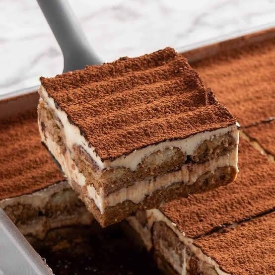

Five cravings. One address.
Gelato after pizza. Coffee beside waffles. A table that lets everyone choose their own kind of heaven.

Open every day
until 1:30 AM
until 1:30 AM
gelatosMr Gelato inside02Woodfire
pizzaSourdough favourites03BrewsHot, iced, unhurried04WafflesCrisp, warm, generous05Savory
bitesMade for the table
The table everyone talks about.
A first edit of the dishes that define Krushna’s Heaven. These are real menu items; final bestseller labels will follow the owner’s approval.

Chocolate Brownie with GelatoWarm brownie. Cold gelato. No compromise.

Amritsar to Krushna HeavenMakhani, paneer tikka and fior di latte.

Classic TiramisuEspresso, mascarpone and cocoa.